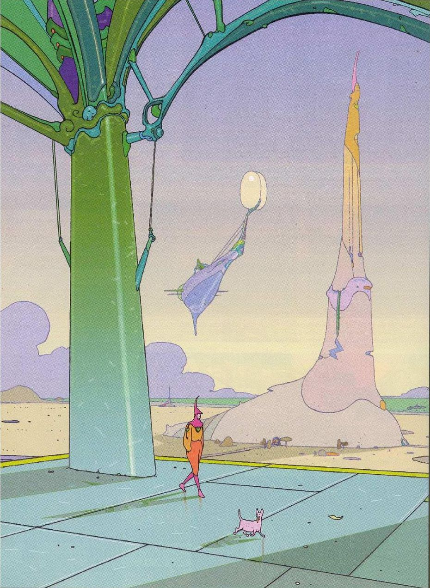
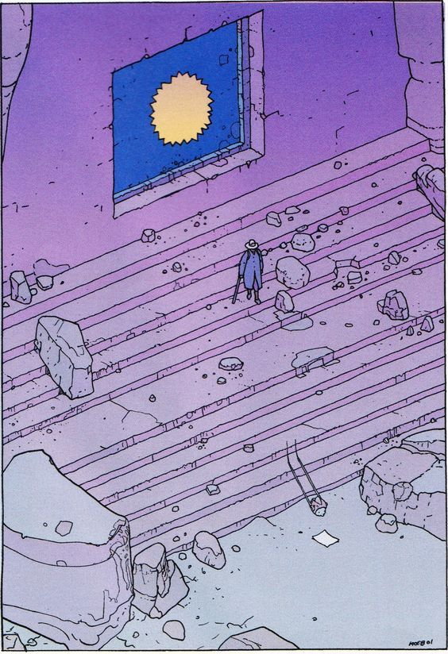
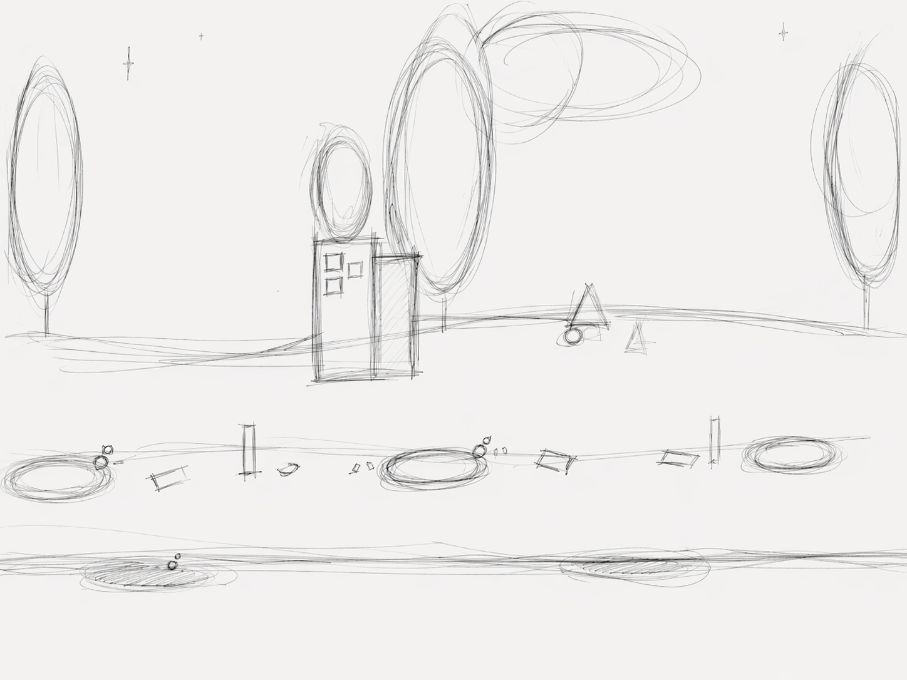
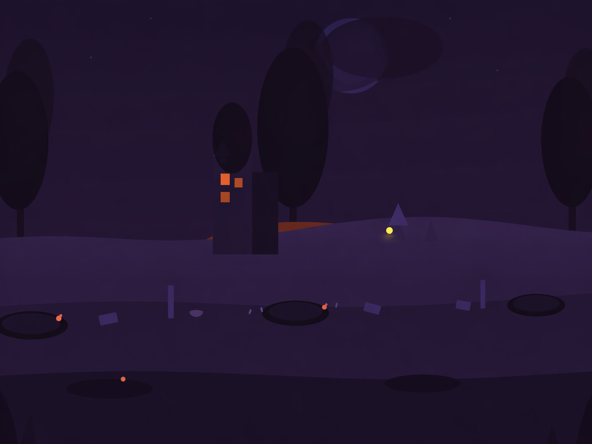

Project Documentation
Echoes of Peace: Technical Implementation & Design Philosophy
Concept
The core of this project explores the causality between user actions and systemic change, moving away from direct representations of war to focus on the experiential process of healing. This philosophy evolved from an initial concept featuring three linear scenes: an innocent field unintentionally destroyed by movement, a catching game for rebuilding, and a post-war meditation. While this earlier version had strong narrative expression, critical feedback suggested it deprived users of agency, as the predetermined path and fixed outcomes limited the exploratory potential of the interactive medium. Consequently, I pivoted to a sandbox model—a free-form ruin where the user is no longer forced through a sequence but is given the autonomy to decide when and how to restore the landscape. By utilizing the Web Audio API and HTML5 Canvas, the project establishes a sensory feedback loop where gestures and movements directly drive the transition from a cold, silent ruin to a vibrant environment. The value of this design lies in its indirectness: meaning is not delivered as a fixed message, but emerges through the user’s active participation in the system’s evolution from "war" to "peace," fostering a more personal and reflective experience.
Technology
One of the biggest challenges was making a 2D web page feel like a vast, desolate landscape. I decided to use a Hybrid Rendering approach to solve this.
Instead of drawing everything on a single Canvas, I separated the background into five static SVG layers (l-sky to l-fg). By applying different coefficients in the parallaxLoop()—where the foreground moves significantly faster than the sky—I created a "multi-plane" effect that mimics 3D depth.
I placed a transparent HTML5 Canvas over these layers. This allows the generative life forms to appear as if they are growing directly within the physical space of the ruins. The hardest part was ensuring the drawWarmth() function correctly interpolated colors, so the "healing" effect felt like it was soaking into the background rather than just sitting on top of it.
Gesture Detection
The most difficult logical hurdle was making the interaction feel "organic," moving beyond a simple click-to-create system to ensure the user's movement truly mattered. To achieve this, I built the Classifier (detectBehaviour), a logic engine that monitors duration, totalMove, and avgSpeed. By tracking the mouse path in a trail array and sampling speed via the mousemove listener, the code distinguishes between a quick "Sweep" and a patient "Dwell." For instance, holding the mouse still for over 1.2 seconds triggers the dwell behavior, spawning a more significant life form; mapping these physical properties to the params object in createGrowth() was a breakthrough in turning raw data into artistic intent. Drawing these elements required progress-based logic, where every item in the growths array uses a prog multiplier based on its age and maxAge to grow dynamically rather than appearing instantly. To sustain the scene's vitality, I implemented a "Wobble" effect using Math.sin(t * 0.001 + item.wobble), creating a subtle oscillation that mimics grass swaying in a breeze. This spatial experience is further enhanced by a Multi-plane Parallax Engine, which maps mouse coordinates to different offset scales for each SVG layer to create depth within the 2D canvas. Finally, the transition from "War" to "Peace" is managed through Dynamic Atmosphere Interpolation. Using Lerp logic within the drawWarmth function, the sky and ground gradients are tied to a warmth variable that "chases" a target based on growthCount. As interaction increases, the code recalculates RGBA values every frame, resulting in a smooth, almost unnoticeable shift from cold purples to life-giving greens and ambers.
Scene
The visual style of the landscape is inspired by Moebius’s "ligne claire" aesthetics. To bridge the gap between creative intuition and technical precision, I utilized a sketch-to-vector workflow:


Original Concept: I manually sketched the landscape on paper to define the ruin structures, horizon lines, and the spatial relationship between the five parallax layers.


To bridge the gap between creative intuition and technical precision, I utilized an AI-assisted vectorization workflow, using Gemini to translate my hand-drawn sketches and stylistic descriptions into precise SVG path data. This allowed for the conversion of organic, hand-drawn shapes into clean, scalable code that remains sharp at any resolution. Once the base SVG code was generated, I performed manual refinement on the fill and opacity values within scene.js to ensure a consistent, somber palette of deep purples (#120A1E), reinforcing the desolate atmosphere. To support the parallax engine in main.js, I organized these visuals into a modular SCENE object, a decoupling of data and logic that offers several technical advantages. The environment is divided into five independent layers—ranging from the distant sky to the foreground—each acting as a separate vector container for precise movement control. By embedding these SVG strings directly into the JavaScript rather than using external files, the project avoids additional image requests, resulting in near-instant load times and optimized rendering performance.
Audio
In this project, I did not use external audio files. This was partly because static audio cannot respond dynamically to user gestures (like dragging speed), and partly because I wanted to experiment with what kind of sounds could be achieved through AI collaboration.
The project utilizes the HTML5 Web Audio API to achieve fully synthesized audio. All sound effects are generated in real-time by connecting sound sources, like oscillators or noise buffers, to gain nodes and filters before reaching the final output. This node-based connectivity ensures that the audio remains flexible and reactive. For instance, wind and rain sounds are sculpted from "White Noise" using a BiquadFilter to remove unwanted frequencies. In the rain effect, the code layers three different frequency bands and combines them with randomly generated short tones to simulate individual droplets, which prevents the sound from feeling mechanically repetitive.
To make the synthesized sounds feel like real-world objects, I used timing parameters to control the volume change curves, often called envelopes. For the wind chimes, the sound hits peak volume the moment it is triggered and then fades out slowly via an exponential curve, mimicking natural physical decay. This same logic applies to the transition of the world’s state; The intro sequence features a low-frequency rumble to simulate a wartime atmosphere, which I programmed to smoothly reduce to zero over 8 seconds using the setTargetAtTime method. This creates a seamless shift from the "war" background noise to the peaceful soundscape created by the user's input.
References
The technical foundation of Echoes of Peace relies on several core web technologies and programming patterns, directly implemented within the main.js and audio.js files:
-
Generative Graphics (Canvas API): All procedural elements, including flora and fauna, are rendered via the Canvas API.
Reference:drawItem()(Line 268) anddrawFlower()(Line 285). -
Parallax Engine: The multi-plane depth effect and frame-by-frame growth are managed by separate loops to optimize performance.
Reference:parallaxLoop()(Line 108) andloop()(Line 424). -
Input Mapping: A centralized logic engine maps user gestures to specific object parameters.
Reference:createGrowth()(Line 218), processing behaviour and form instantiation. -
System State Management: Global flags manage the transition from the narrative intro to the interactive sandbox.
Reference:warIntroActive(Line 118) andenterBtnlistener (Line 448). -
Real-time Audio Synthesis: Environmental and musical feedback are synthesized algorithmically without external samples.
Reference:noiseNode()(Line 42) andplayChime()(Line 71).
External Documentation & Inspiration
MDN Web Docs: Canvas API
MDN Web Docs: Web Audio API
Visual Reference: Aesthetic Study 01
Visual Reference: Aesthetic Study 02
Google Gemini (2026): Vibe Coding Assistance - Algorithmic Sound Synthesis and Procedural Logic.